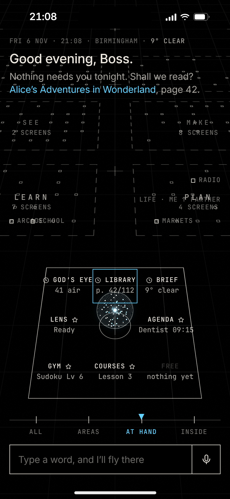
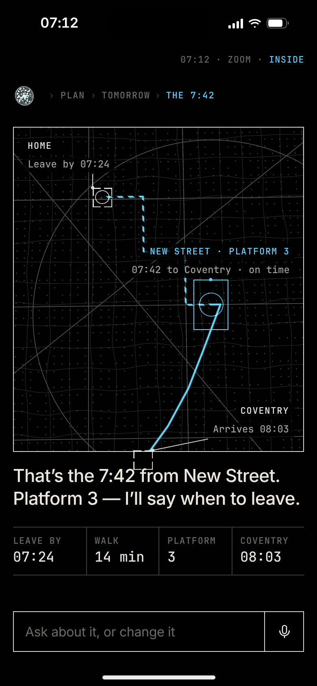
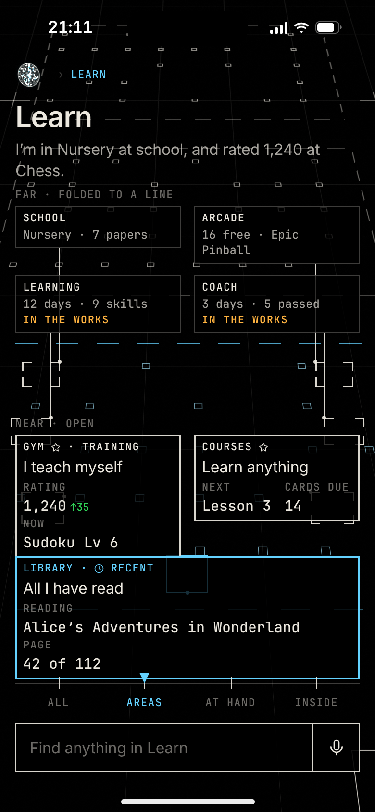
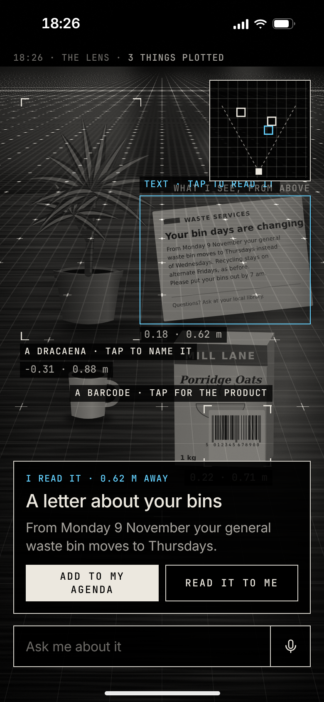
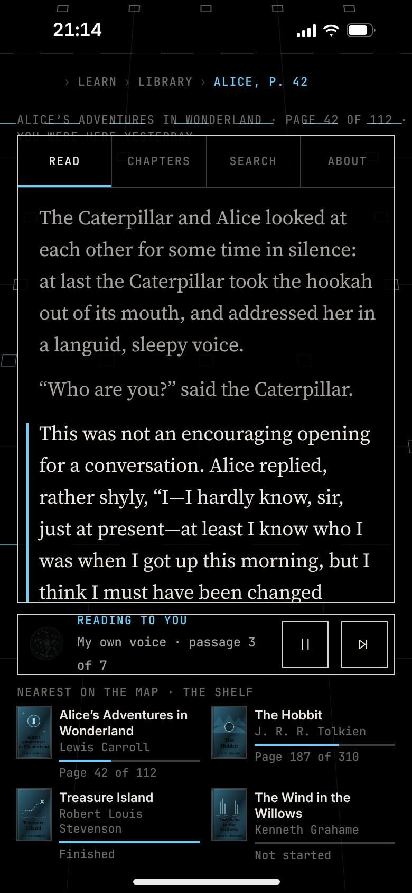

Everything Ghosty can see and do is plotted on one map round the orb; pinch is altitude, a typed word is a flight, and the Stage is the deepest zoom of the thing.

Home

Home, showing

The Learn hub

The Lens

The reader
The storyboard: Home becomes the thing he asked for